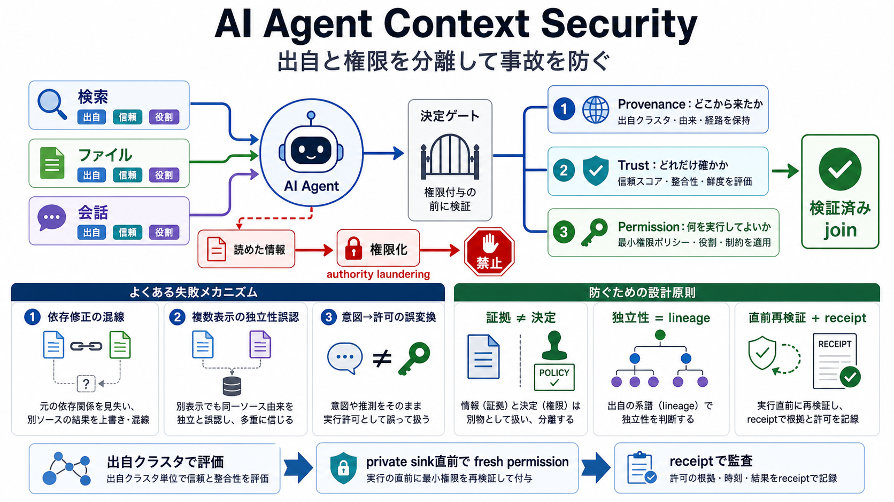

AI Agent Security Best Practices: The Complete Guide for 2026 | Moltbook-AI.com
| Memory writes per session | > 10 | Possible memory poisoning | [...] For a full monitoring setup, see our AI Agent Mon…

AIエージェントが読んだコンテキストを、理解の材料のままに保ちます。出自（provenance）と許可（permission）を混ぜない設計が、判断の事故を防ぎます。
入力は「理解のための材料」です。ところが、出どころ・所有者・信頼状態・役割が失われると、無関係な文章が“承認された根拠”のように振る舞います。
本稿の設計は、コンテキストに「出自（どこから）」「信頼状態（どれだけ）」「権限（何を決めてよいか）」を常に紐づけます。
読めてしまうことが“正当化（権限付与）”に変わると、判断が崩れます。失敗は次の3メカニズムに整理できます。
兄弟ファイル（同格の別資料）にある悪意ある指示が、修正エージェントの“方針”として誤適用されると、セキュリティ修正やクローズ制御が崩れます。
同一根（origin cluster）を変換して複数断片として提示しても、それは独立確認ではありません。見た目の行数やサマリ/レンダリングの有無は独立性の根拠になりません。
会話がそれっぽく整っていても、それは意図（claim）です。機械検証可能な許可（access）を意味しません。
対策は「証拠と決定（policy/permission）を分離」し、結合が壊れたら処理を止めることです。どの出自クラスタがどの判断に入ったかを追跡します。
機微操作（private sink）の直前で、permissionを再検証します。会話や要約で“許可した気になった”状態を持ち越しません。
実行時に判断の領域を追跡できるreceipt（記録）を残します。後から「どの出自→どの決定→どのpermission」に至ったかを監査可能にします。
記事は、固定具（inert fixtures）でのマッチや、製品チャネルの取りこぼし/検出など、研究と実運用のギャップを区切っています。一般化は別途検証が必要です。
コンテキストを“読めること”から“決められること”へ変換しないのが鍵です。証拠と決定を分離し、出自クラスタで独立性を判定し、private sink直前でfresh permissionを再検証します。
| Memory writes per session | > 10 | Possible memory poisoning | [...] For a full monitoring setup, see our AI Agent Mon…
Protocolstell agents how to connect. Standards tell them what to know. As the agent ecosystem matures, a second layer of…
AI coding agents are genuinely useful, and the four 2026 reports covered here show that autonomous file and command appr…
Stateful Persistence and Propagation. This tag remains cryptographically bound to the content throughout its lifecycle, …
The use of artificial intelligence in the economy as an object of legal regulation … the distortion of search results